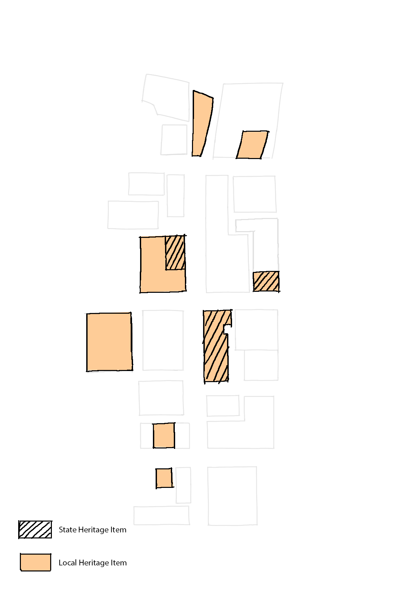

*Connect The Parramatta Square and The River Square in physical and symbolic level.

*Demolish the Horwood Place Car Park and rebuilt and 70 Macquaire Street, which are critical to the Civic Link because these two site block the way.

*Recognise and respond to heritage along the Link.

*Develop adjoining commercial spaces.
*Adjust public transport in surrounding area.